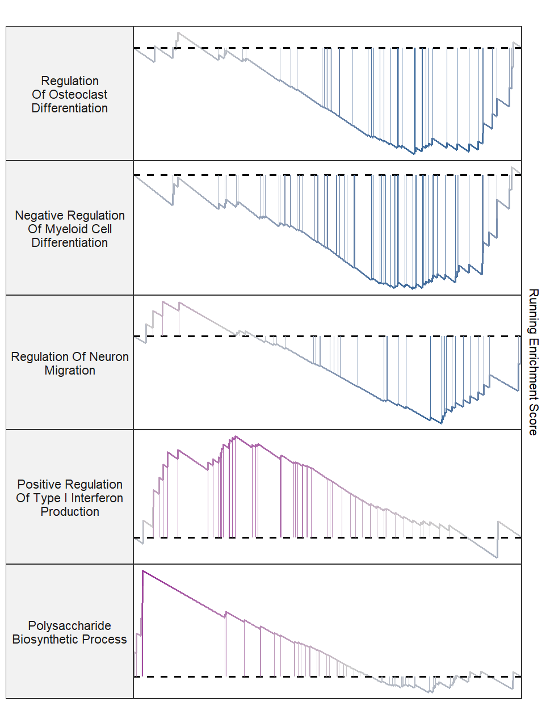

Chapter 2 Basic usage
GseaVis introduces classic gsea visualization and graphic in a new style. Users can create at a publication-quality level.
2.1 Classic visualization
First we load example data:
library(GseaVis)
# load data
test_data <- system.file("extdata", "gseaRes.RDS", package = "GseaVis")
gseaRes <- readRDS(test_data)
gseaRes
# # Gene Set Enrichment Analysis
# #
# #...@organism UNKNOWN
# #...@setType UNKNOWN
# #...@geneList Named num [1:27970] 6.02 5.96 5.84 5.8 5.72 ...
# - attr(*, "names")= chr [1:27970] "Ecscr" "Gm32341" "B130034C11Rik" "Hkdc1" ...
# #...nPerm
# #...pvalues adjusted by 'BH' with cutoff <1
# #...4917 enriched terms found
# 'data.frame': 4917 obs. of 11 variables:
# $ ID : chr "GOBP_REGULATION_OF_VASCULOGENESIS" "GOBP_AMEBOIDAL_TYPE_CELL_MIGRATION" "GOBP_REGULATION_OF_OSSIFICATION" "GOBP_NEGATIVE_REGULATION_OF_EPITHELIAL_CELL_PROLIFERATION" ...
# $ Description : chr "GOBP_REGULATION_OF_VASCULOGENESIS" "GOBP_AMEBOIDAL_TYPE_CELL_MIGRATION" "GOBP_REGULATION_OF_OSSIFICATION" "GOBP_NEGATIVE_REGULATION_OF_EPITHELIAL_CELL_PROLIFERATION" ...
# $ setSize : int 14 382 106 110 322 209 228 278 11 34 ...
# $ enrichmentScore: num 0.803 -0.345 -0.461 -0.456 -0.346 ...
# $ NES : num 1.85 -1.39 -1.61 -1.58 -1.36 ...
# $ pvalue : num 0.000273 0.00051 0.000528 0.000543 0.000853 ...
# $ p.adjust : num 0.667 0.667 0.667 0.667 0.686 ...
# $ qvalues : num 0.667 0.667 0.667 0.667 0.686 ...
# $ rank : num 1515 7626 6611 7802 7751 ...
# $ leading_edge : chr "tags=29%, list=5%, signal=27%" "tags=36%, list=27%, signal=27%" "tags=39%, list=24%, signal=30%" "tags=42%, list=28%, signal=30%" ...
# $ core_enrichment: chr "Adm/Ramp2/Hey2/Asb4" "Akap12/Ceacam1/Zeb2/Foxp1/Efnb2/Tpbg/Hyal1/Mmp9/Slc8a1/Pfn2/Ltb4r2/Ilk/Bcar1/Gipc1/Plpp3/Arhgef7/Prkx/Epha2/Hda"| __truncated__ "Ddr2/Ifitm5/S1pr1/Tgfb1/Intu/Sox11/Bmp7/Bmpr2/Mdk/Smad3/Fbn2/Tent5a/Adgrv1/Calca/Matn1/Enpp1/Twist1/Alox5/Ccn1/"| __truncated__ "Sparc/Tgfbr3/Ift172/Flt1/Sfrp2/Ceacam1/Pex2/Cdkn1b/Maged1/Efnb2/Klf9/Sfn/Nupr1/Aqp11/Tgfb2/Robo1/Tgfb1/Nr2f2/Rb"| __truncated__ ...
# #...Citation
# T Wu, E Hu, S Xu, M Chen, P Guo, Z Dai, T Feng, L Zhou, W Tang, L Zhan, X Fu, S Liu, X Bo, and G Yu.
# clusterProfiler 4.0: A universal enrichment tool for interpreting omics data.
# The Innovation. 2021, 2(3):100141Classic plot:
Using subPlot to retain curve plot:
# retain curve
gseaNb(object = gseaRes,
geneSetID = 'GOBP_NUCLEOSIDE_DIPHOSPHATE_METABOLIC_PROCESS',
subPlot = 1)
Retain heatmap and curve:
# retain curve and heatmap
gseaNb(object = gseaRes,
geneSetID = 'GOBP_NUCLEOSIDE_DIPHOSPHATE_METABOLIC_PROCESS',
subPlot = 2)
You can define the term width when it is to long:
# wrap the term title
gseaNb(object = gseaRes,
geneSetID = 'GOBP_NUCLEOSIDE_DIPHOSPHATE_METABOLIC_PROCESS',
subPlot = 2,
termWidth = 30)
2.2 Marking gene names
At some scenario, you may want to highlight some interested genes in the term and show which position they are:
# add gene in specific pathway
mygene <- c("Entpd8","Htr2a","Nt5e","Actn3","Entpd1",
"Pfkp", "Tpi1","Igf1","Ddit4","Ak9")
# plot
gseaNb(object = gseaRes,
geneSetID = 'GOBP_NUCLEOSIDE_DIPHOSPHATE_METABOLIC_PROCESS',
subPlot = 2,
addGene = mygene)
You can change gene color and arrow type:
# change gene color and arrow type
gseaNb(object = gseaRes,
geneSetID = 'GOBP_NUCLEOSIDE_DIPHOSPHATE_METABOLIC_PROCESS',
subPlot = 2,
addGene = mygene,
arrowType = 'open',
geneCol = 'black')
Whole plot with marked gene:
# all plot
gseaNb(object = gseaRes,
geneSetID = 'GOBP_NUCLEOSIDE_DIPHOSPHATE_METABOLIC_PROCESS',
subPlot = 3,
addGene = mygene,
rmSegment = TRUE)
2.3 New style graphic
Here we introduce a new style plot with mergeing gene rank plot into the curve plot:
# new style GSEA
gseaNb(object = gseaRes,
geneSetID = 'GOBP_NUCLEOSIDE_DIPHOSPHATE_METABOLIC_PROCESS',
newGsea = T)

Remove the points for each vertical segemnt:
# new style GSEA remove point
gseaNb(object = gseaRes,
geneSetID = 'GOBP_NUCLEOSIDE_DIPHOSPHATE_METABOLIC_PROCESS',
newGsea = T,
addPoint = F)

Change the heatmap color:
# change heatmap color
gseaNb(object = gseaRes,
geneSetID = 'GOBP_NUCLEOSIDE_DIPHOSPHATE_METABOLIC_PROCESS',
newGsea = T,
addPoint = F,
newHtCol = c("blue","white", "red"))
You can also label your interested gene:
# new style GSEA with gene name
gseaNb(object = gseaRes,
geneSetID = 'GOBP_NUCLEOSIDE_DIPHOSPHATE_METABOLIC_PROCESS',
newGsea = T,
addGene = mygene)
Remove red segemnt:
# remove red segment
gseaNb(object = gseaRes,
geneSetID = 'GOBP_NUCLEOSIDE_DIPHOSPHATE_METABOLIC_PROCESS',
newGsea = T,
rmSegment = T,
addGene = mygene)
Remove heatmap:
# remove heatmap
gseaNb(object = gseaRes,
geneSetID = 'GOBP_NUCLEOSIDE_DIPHOSPHATE_METABOLIC_PROCESS',
newGsea = T,
rmSegment = T,
rmHt = T,
addGene = mygene)
2.4 Add NES and Pvalue
Sometimes you need to add NES score and Pvalue to interpret the term’s significance:
# add pvalue and NES
gseaNb(object = gseaRes,
geneSetID = 'GOBP_NUCLEOSIDE_DIPHOSPHATE_METABOLIC_PROCESS',
newGsea = T,
addGene = mygene,
addPval = T)
Adjust the relative position:
# control label ajustment
gseaNb(object = gseaRes,
geneSetID = 'GOBP_NUCLEOSIDE_DIPHOSPHATE_METABOLIC_PROCESS',
newGsea = T,
addGene = mygene,
addPval = T,
pvalX = 0.75,pvalY = 0.8,
pCol = 'black',
pHjust = 0)
The classic plot with NES and pvalue annotation:
# clsaasic with pvalue
gseaNb(object = gseaRes,
geneSetID = 'GOBP_NUCLEOSIDE_DIPHOSPHATE_METABOLIC_PROCESS',
addGene = mygene,
addPval = T,
pvalX = 0.75,pvalY = 0.8,
pCol = 'black',
pHjust = 0)
2.5 Multiple terms GSEA plot
Multiple terms can be drawn in a single plot or using a for loop.
# bacth plot
terms <- c('GOBP_NUCLEOSIDE_DIPHOSPHATE_METABOLIC_PROCESS',
'GOBP_REGULATION_OF_OSSIFICATION',
'GOBP_TISSUE_MIGRATION',
'GOBP_CELL_MATRIX_ADHESION')
# plot
lapply(terms, function(x){
gseaNb(object = gseaRes,
geneSetID = x,
addPval = T,
pvalX = 0.75,pvalY = 0.75,
pCol = 'black',
pHjust = 0)
}) -> gseaList
# combine
cowplot::plot_grid(plotlist = gseaList,ncol = 2,align = 'hv')
Combine into a single plot:
geneSetID = c('GOBP_NUCLEOSIDE_DIPHOSPHATE_METABOLIC_PROCESS',
'GOBP_REGULATION_OF_OSSIFICATION',
'GOBP_TISSUE_MIGRATION')
# all plot
gseaNb(object = gseaRes,
geneSetID = geneSetID)

Retain curve and heatmap:
Remove heatmap:
Wrap term name and adjust legend position:
# wrap term name and adjust position
gseaNb(object = gseaRes,
geneSetID = geneSetID,
subPlot = 2,
termWidth = 35,
legend.position = c(0.5,0.7))
Add gene names:
# add gene name
gene <- c("Entpd8","Htr2a","Nt5e","Actn3","Entpd1",
"Pfkp", "Tpi1","Igf1","Ddit4","Ak9")
gseaNb(object = gseaRes,
geneSetID = geneSetID,
subPlot = 2,
termWidth = 35,
legend.position = c(0.8,0.8),
addGene = gene)
Add NES and pvalue:
# add NES and Pvalue
gseaNb(object = gseaRes,
geneSetID = geneSetID,
subPlot = 2,
termWidth = 35,
legend.position = c(0.8,0.8),
addGene = gene,
addPval = T,
pvalX = 0.05,pvalY = 0.05)
Change color:
# change line color
gseaNb(object = gseaRes,
geneSetID = geneSetID,
subPlot = 2,
termWidth = 35,
legend.position = c(0.65,0.8),
addGene = gene,
addPval = T,
pvalX = 0.05,pvalY = 0.05,
curveCol = jjAnno::useMyCol('paired',3))
A facet style plot:
# load data
test_data <- system.file("extdata", "gseaRes.RDS", package = "GseaVis")
gseaRes <- readRDS(test_data)
setid <- c("GOBP_REGULATION_OF_OSTEOCLAST_DIFFERENTIATION",
"GOBP_NEGATIVE_REGULATION_OF_MYELOID_CELL_DIFFERENTIATION",
"GOBP_REGULATION_OF_NEURON_MIGRATION",
"GOBP_POSITIVE_REGULATION_OF_TYPE_I_INTERFERON_PRODUCTION",
"GOBP_POLYSACCHARIDE_BIOSYNTHETIC_PROCESS")
gseaNb(object = gseaRes,
geneSetID = setid,
newGsea = T,
rmHt = T)
Control term label width:

Retain Y axis:
Add pvalue and NES:
gseaNb(object = gseaRes,
geneSetID = setid,
newGsea = T,
addPval = T,
rmHt = T,
pvalX = 0.9,
pvalY = 0.5,
pFill = "white")
Add top gene labels:
gseaNb(object = gseaRes,
geneSetID = setid,
newGsea = T,
addPval = T,
rmHt = T,
pvalX = 0.8,
pvalY = 0.5,
pFill = "white",
addGene = T,
markTopgene = T,
geneCol = "#009933")
Change curve colors:
setid2 <- c("GOBP_POSITIVE_REGULATION_OF_MUSCLE_HYPERTROPHY",
"GOBP_BIOLOGICAL_PROCESS_INVOLVED_IN_INTERACTION_WITH_SYMBIONT",
"GOBP_POSITIVE_REGULATION_OF_LEUKOCYTE_MIGRATION",
"GOBP_REGULATION_OF_MACROPHAGE_DIFFERENTIATION",
"GOBP_METANEPHRIC_NEPHRON_MORPHOGENESIS")
gseaNb(object = gseaRes,
geneSetID = setid2,
newGsea = T,
addPval = T,
rmHt = T,
pvalX = 0.8,
pvalY = 0.5,
pFill = "transparent",
addGene = T,
markTopgene = T,
geneCol = "#009933",
newCurveCol = rainbow(7))
2.6 KEGG object with marking gene names
You need use setReadable function to transform ENTEZID into SYMBOL and set kegg = T:
library(clusterProfiler)
library(org.Hs.eg.db)
library(enrichplot)
library(GseaVis)
# load test data
data(geneList, package="DOSE")
# check
head(geneList)
# 4312 8318 10874 55143 55388 991
# 4.572613 4.514594 4.418218 4.144075 3.876258 3.677857
# KEGG enrich
kk2 <- gseKEGG(geneList = geneList,
organism = 'hsa',
minGSSize = 120,
pvalueCutoff = 0.05,
verbose = FALSE)
# transform entrizid to gene symbol
kk2 <- setReadable(kk2,
OrgDb = "org.Hs.eg.db",
keyType = "ENTREZID")
gseaNb(object = kk2,
geneSetID = 'hsa05169',
subPlot = 2,
addGene = T,
kegg = T,
markTopgene = T)